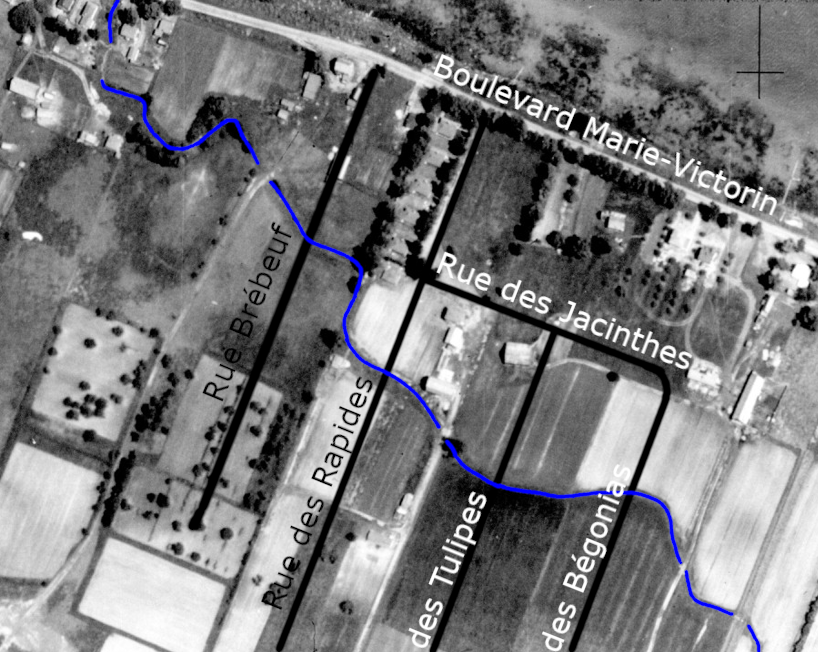

Ruisseau « Optimiste » de Sainte-Catherine
Jusque dans les 1960, si vous empruntiez l'ancienne Route No 3 (reliant Lévis à Fort Covington)
dans la Côte-Sainte-Catherine, tout juste après avoir passé le quai de La Tortue (aujourd'hui le quai du Pic),
vous verriez couler un petit ruisseau agricole sous la route, se déversant dans les battures du fleuve.
Aujourd'hui, cette route est devenue le boulevard Marie-Victorin et si vous passez à cet endroit, vous
ne verriez plus de ruisseau, seulement des habitations d'un côté de la rue, et le parc Optimiste de l'autre.
Bien que n'étant qu'à quelques centaines de mètres des rivières du Portage et de la Tortue, ce ruisseau
possédait son propre bassin versant (très petit), grâce à la très faible dénivélation qui caractérise la plaine
du Roussillon. En effet, le relief très plat combiné avec le caractère humide de la région permettent la
très forte concentration de cours d'eau qu'on y retrouve.
Le ruisseau prennait ainsi sa source dans les fossés de drainage des champs, qui occupaient l'entiereté du
territoire de cette côte. Plus précisément, le cours d'eau commençait probablement près de l'actuelle rue
des Cascades, à proximité de l'école des Bourlingueurs.
Il s'écoulait ensuite doucement vers le nord-ouest, coupant les champs des agriculteurs, qui se servaient sans doute
du ruisseau pour drainer rapidement leurs terres. Il traversait ainsi les cultures sur 1000 mètres environ, en étant parfois
à moins de 300m de la rivière du Portage, avant de croiser les premiers bâtiments, à proximité de l'actuelle rue Brébeuf.

Avant la construction de la rue Brébeuf et le développement de ses abords dans les années 1950, le ruisseau ne faisait
que méandrer dans la cours d'un résident, en passant tout près d'un bâtiment.